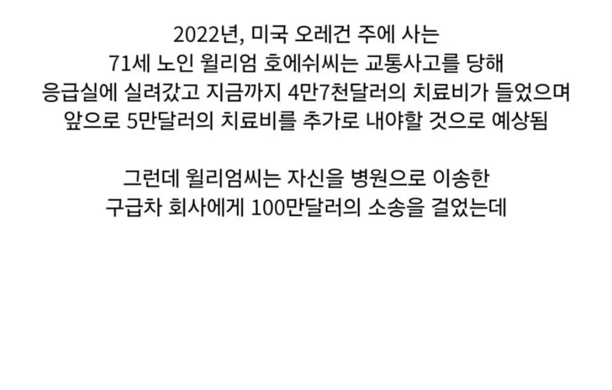
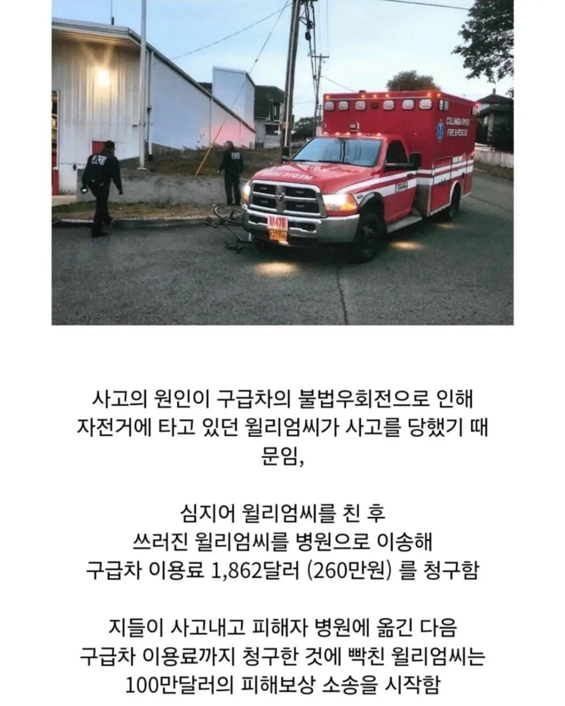

ㅋㅋㅋ 미친새끼들 아니야? ㅋㅋㅋㅋㅋㅋ


ㅋㅋㅋ 미친새끼들 아니야? ㅋㅋㅋㅋㅋㅋ
서비스 이용에 예외를 두지 않는다!
이 소송까지가 진짜 보상이라구..!
병원이 망할 위기입니다...
구급차의 시동을 거시오!
뭔 손님을 직접 만드는 시스템인거냐
사탄도 울고갈 창조경제네
??? : 이렇게 하지 않으면 ㅈ같은 회사가 당신에겐 교통사고 보상조로 쥐꼬리만한 보상을 할거란말이오.
미국은 무슨 싸펑에서나 나올법한 부조리한 사건들이 너무 많아
GTA가 왜 나왔겠어
고백) GTA 한번도 안 해봄
이게 아닌데~ 내맘은 이게 아닌데~
어으 척추선다
차 유리깨고 훔쳐가서 그냥 문 열어놓는다 ㅋㅋㅋ
환자가 없으면 만들면 된다. 상식이잖아?
영업뛴거네 ㅋㅋㅋㅋ
결말이 궁금한데..
환자는 창조하는것이다
어허 산지직송
창조경제인건 맞는데,
프로토콜대로 정확히 한거 같음
자기(구급차) 잘 못으로 사고를 낸 것은 개인(혹은 기관)이 만든거고
구급차로 이송하는 서비스는 일로써 차지를 받아야 한다고 생각하겠지
그리고 피해자는 소송이라는 절차를 통해 피해액을 산정받아가면 된다
소송절차가 까다롭긴해도 그만큼 기대수익도 높기때문에, 나름 깔끔한 일처리 방식인거 같기도 하고...
오히려 병원측에서 저런 방식을 제시한 걸 수도 있어
치료비를 그냥 안내거나 깍아줄 순 없거든
자기들이 잘못한거 알고
보상해주려는 또다른 방식일수도 있는거야
구급차가 사고내서 미안하긴 한데 보상해줄 방법이 없어서 저런 방식을 쓴게 아닐까? ㅋㅋㅋ
쟤들은 우리 기준으로는 다 소시오패스 아님?
업무 매뉴얼을 너무 철저히 지킨 결과